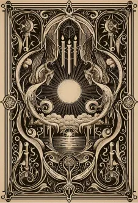

EL MUNDO DE
LAS MANCIAS
Refiere al arte de la adivinación. Es un término que se utiliza para describir prácticas o métodos para revelar información oculta, mediante medios no convencionales.
Descubre Más →Refiere al arte de la adivinación. Es un término que se utiliza para describir prácticas o métodos para revelar información oculta, mediante medios no convencionales.
Descubre Más →
Los Registros Akáshicos representan una memoria universal de la existencia. Son un espacio multidimensional donde se archivan todas las experiencias del alma, incluyendo conocimientos y vivencias de vidas pasadas, la vida presente y las potencialidades futuras.
Se basa en la idea de que existe una energía vital universal que fluye a través de todos los seres vivos. Esta energía se llama "Ki" en japonés (o "Chi" en chino). El término japonés "Reiki" significa: "Rei" (sabiduría de Dios o poder superior) y "Ki" (energía vital).

.gif)
Proviene del idioma quechua y se traduce como "Te amo" o "Sé como tú eres". Refleja la esencia de estos rituales: el poder del amor y la conexión con nuestra verdadera naturaleza.